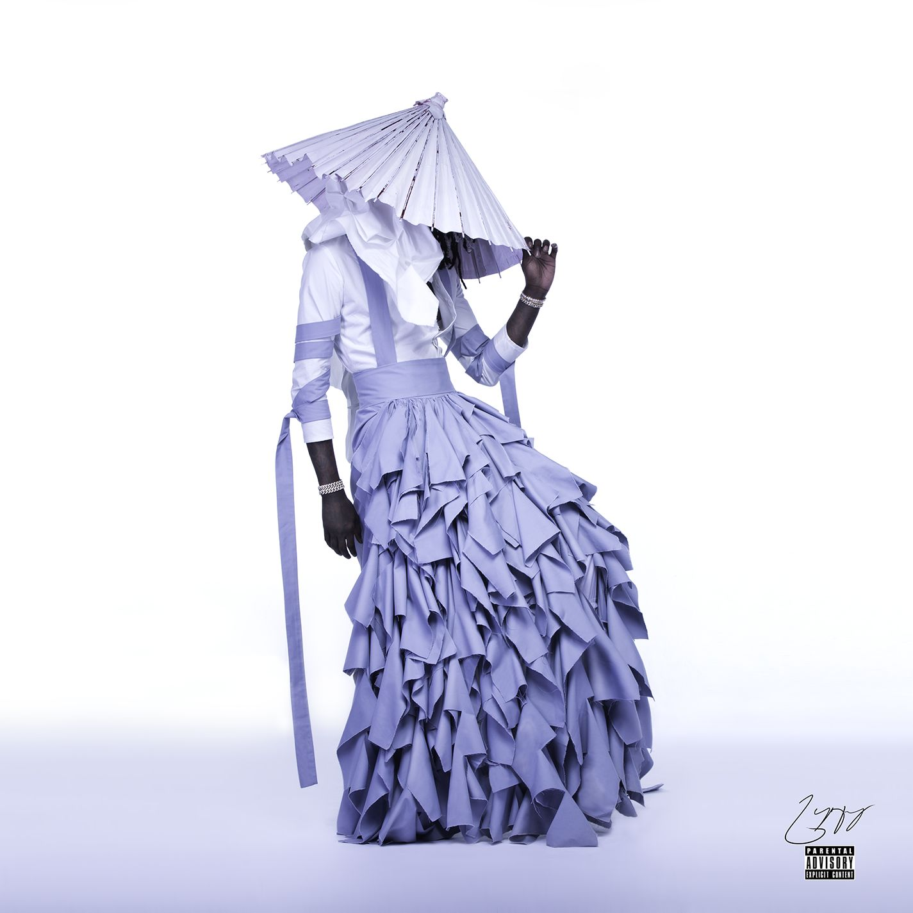
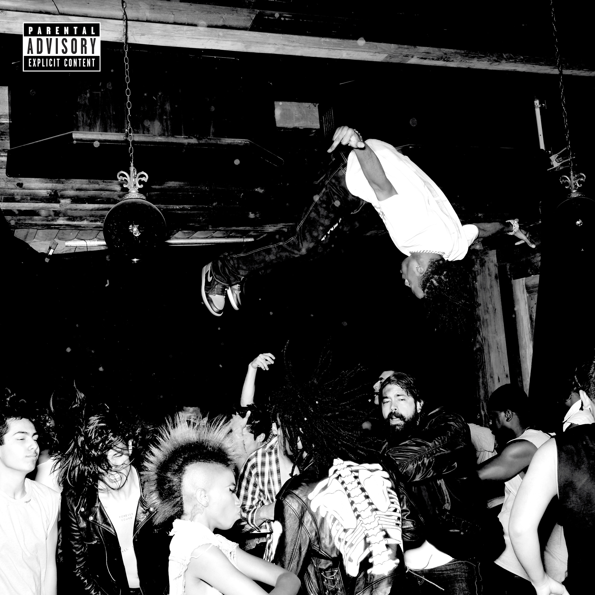
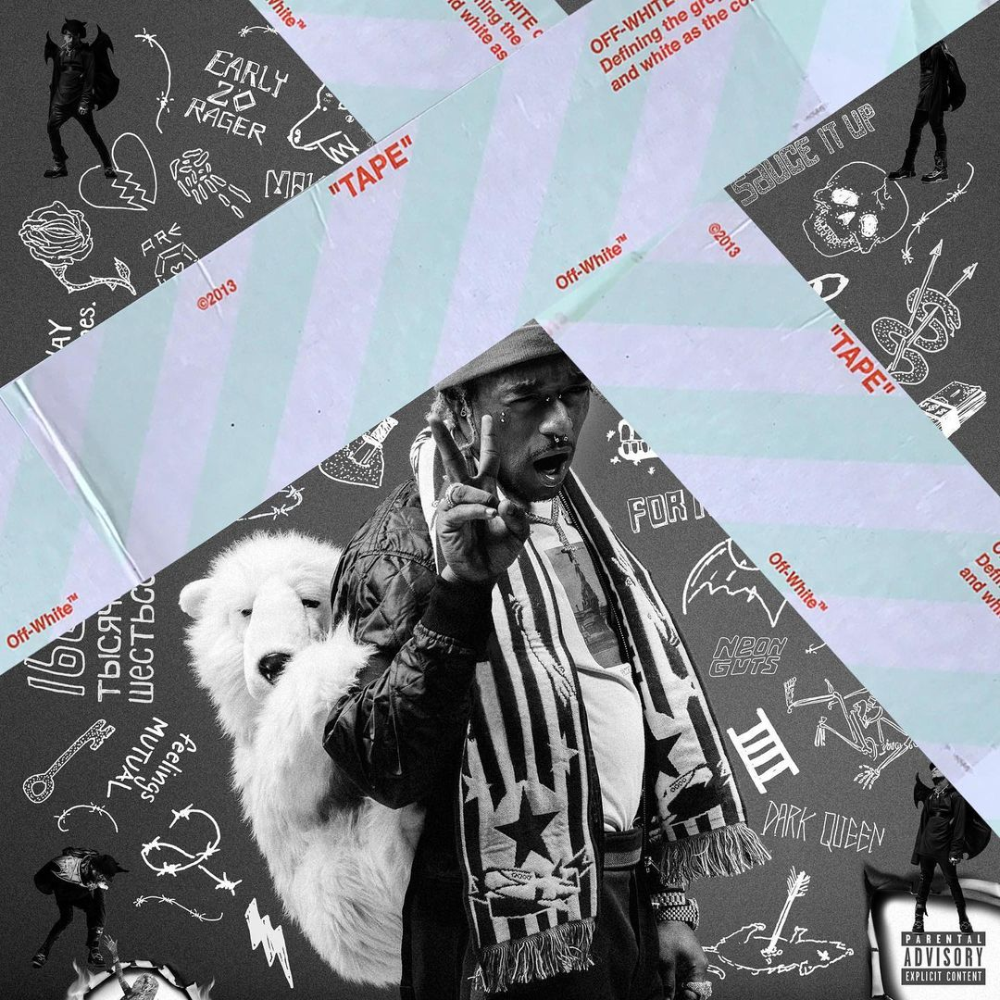
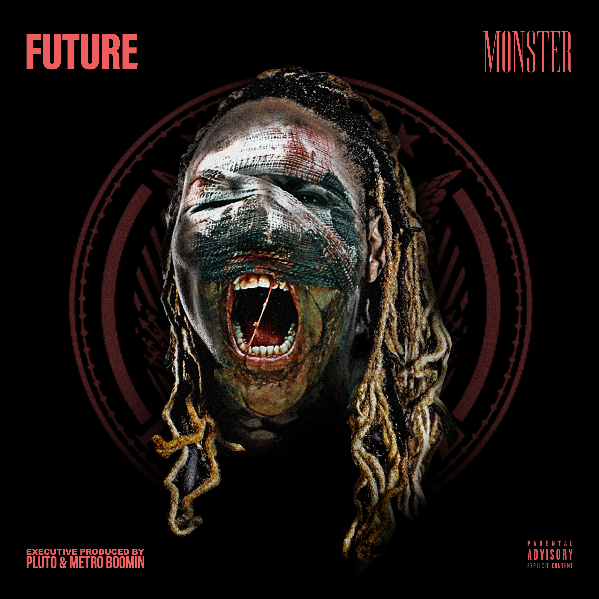

Trap Music
The Birth and Evolution of Trap Music: A Legacy Cemented by Iconic Albums
Trap music, an innovative subgenre of hip-hop, has evolved from its Southern roots into a worldwide cultural phenomenon. Characterized by its heavy 808 bass, rapid hi-hats, and introspective or braggadocious lyricism, trap has become a defining sound of contemporary music. Among the numerous contributions to the genre, five albums stand out as monumental achievements: Rodeo by Travis Scott, Jeffery by Young Thug, Die Lit by Playboi Carti, Luv Is Rage 2 by Lil Uzi Vert, and Monster by Future. These records not only epitomize the genre's creative heights but also serve as its most influential and enduring works.

Rodeo: A Cinematic Masterpiece
Released in 2015, Travis Scott's Rodeo elevated trap music to cinematic levels. With a soundscape blending psychedelic production, autotuned melodies, and genre-defying beats, Rodeo captures the chaotic and surreal essence of Scott's artistic vision. Tracks like “Antidote” and “3500” highlight his ability to balance mainstream appeal with experimental creativity. The album is a milestone in trap’s evolution, showcasing its potential for storytelling and emotional depth. Scott’s seamless fusion of atmospheric production and narrative lyricism makes Rodeo one of the best albums in the genre, reshaping trap music into an art form that transcends its roots.

Jeffery: Young Thug's Avant-Garde Triumph
Young Thug’s 2016 project, Jeffery, is a celebration of individuality and unorthodox artistry. With its vibrant cover art and genre-fluid sound, Jeffery pushes the boundaries of what trap music can be. Songs like “Wyclef Jean” and “Pick Up the Phone” blend reggae, pop, and traditional trap elements, highlighting Thug’s ability to innovate while staying true to the genre’s core. His elastic vocal delivery and unpredictable flows redefine the use of voice as an instrument, making Jeffery not just an album but a statement of artistic freedom. This groundbreaking project solidified Thug’s influence on trap and inspired countless artists to embrace their unique styles.

Die Lit: Minimalism Meets Energy
Playboi Carti’s Die Lit (2018) represents the raw, unfiltered energy of trap music. With minimalist lyrics and hypnotic production, the album emphasizes mood and vibe over traditional songwriting. Tracks like “Shoota” and “R.I.P.” are anthems of hedonism and youthful rebellion, capturing the zeitgeist of a generation. Carti’s use of ad-libs as primary elements and his ability to turn simplicity into an aesthetic makes Die Lit a masterclass in modern trap innovation. Its influence on contemporary music is undeniable, shaping the sound of an entire wave of artists focused on atmosphere and vibe over conventional structure.

Luv Is Rage 2: Emotional Vulnerability in Trap
Lil Uzi Vert’s Luv Is Rage 2 (2017) brought a new dimension to trap music: emotional vulnerability. Uzi’s blend of emo-inspired melodies and trap beats created a sound that resonates deeply with listeners. Songs like “XO TOUR Llif3” and “The Way Life Goes” showcase his ability to channel heartbreak and existential angst into infectious anthems. This album redefined the genre by proving that trap music could explore themes beyond materialism and bravado. Uzi’s influence can be felt in the rise of emotionally driven trap music, making Luv Is Rage 2 a cornerstone of the genre.

Monster: The Blueprint of Modern Trap
Future’s Monster (2014) is a seminal work that laid the foundation for trap’s dominance in the 2010s. Dark, introspective, and unapologetically raw, Monster captures the essence of street tales and personal struggles. Tracks like “Codeine Crazy” are masterpieces of emotional storytelling, blending haunting production with Future’s poignant delivery. This mixtape is the blueprint for much of modern trap music, setting a standard for lyrical honesty and sonic innovation. Monster solidified Future’s status as one of the genre’s pioneers, influencing a generation of artists to embrace their vulnerabilities while staying true to the gritty roots of trap.

A Collective Legacy
These five albums represent the pinnacle of trap music, each pushing the genre in unique and transformative directions. Rodeo brought cinematic depth, Jeffery redefined artistic freedom, Die Lit celebrated raw energy, Luv Is Rage 2 introduced emotional vulnerability, and Monster provided the blueprint for modern trap. Together, they demonstrate the genre’s versatility and its capacity for artistic innovation.
Trap music’s rise from Southern streets to global domination is a testament to its creators’ ingenuity and cultural relevance. These albums are not merely products of their time; they are timeless masterpieces that continue to shape the sound and ethos of the genre. As the genre evolves, these records will remain its defining works, standing as monuments to the creativity and cultural impact of trap music.
Ode to Trap’s Finest (A Short Poem)
Rodeo, a dream, where chaos meets art,
Jeffery, a canvas, breaking rules from the start.
Die Lit, the anthem, of youth set free,
Luv Is Rage 2, where pain finds melody.
Monster, the roots, dark tales unfold,
Five crowns of trap, their legacy bold.

Ordered List: Ranking Albums by Impact
- Monster (Future): The foundational blueprint for modern trap music.
- Rodeo (Travis Scott): Elevated trap to a cinematic, genre-defying experience.
- Jeffery (Young Thug): Redefined artistic freedom and vocal experimentation.
- Luv Is Rage 2 (Lil Uzi Vert): Introduced emotional vulnerability to trap’s core.
- Die Lit (Playboi Carti): Exemplified minimalism and raw energy in modern trap.
Unordered List: Key Highlights of Each Album
- Monster (Future): Emotional storytelling, raw street tales, iconic track Codeine Crazy.
- Rodeo (Travis Scott): Psychedelic production, narrative depth, hits like Antidote.
- Jeffery (Young Thug): Genre-fluid sounds, bold cover art, standout track Pick Up the Phone.
- Luv Is Rage 2 (Lil Uzi Vert): Emo-inspired melodies, introspective lyrics, XO TOUR Llif3.
- Die Lit (Playboi Carti): Hypnotic production, ad-lib-heavy style, bangers like Shoota.